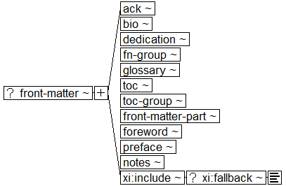

Book Interchange Tag Suite (BITS) Version 1.0 Tag Library Version 1.0
Digital Archive of Journal Articles
National Center for Biotechnology Information (NCBI)
National Library of Medicine (NLM)
Narrative Front Matter Structures

Subsidiary sections:
Acknowledgments structure diagram
Biography structure diagram
Dedication structure diagram
Named Book Part Body structure diagram
Footnote Group structure diagram
Glossary Elements List structure diagram
Table of Contents structure diagram
Table of Contents Entry structure diagram
Table of Contents Division structure diagram
Table of Contents Group structure diagram
Front Matter Part structure diagram
Foreword structure diagram
Preface structure diagram